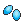
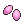
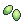
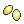
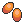
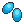
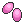
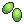
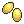

¡Bienvenido a la Guía Dinamica de Cultivos para PokeMMO!
Estas son herramientas para calcular cuando estarán listas tus bayas, junto con una lista que te será de ayuda para conocer las caracteristicas principales de las bayas
| Mostrando todas las bayas |
| Nombre |
Se crea con |
Usos |
TC |
BC |

Zreza |
3 semillas picantes  |
Cura la paralisis
Farmeo de semillas picantes |
16 hrs |
2 - 6 |
Atania |
3 semillas secas  |
Despierta al Pokémon
Farmeo de semillas secas |

Meloc |
3 semillas dulces  |
Cura el envenenamiento
Farmeo de semillas dulces |

Safre |
3 semillas amargas  |
Cura las quemaduras
Farmeo de semillas amargas |

Perasi |
3 semillas ácidas  |
Cura el congelamiento
Farmeo de semillas ácidas |

Grana |
1 semilla picante
+ 1 semilla amarga
+ 1 semilla muy picante 
|
Resta 10 Ev´s de PS
Aumenta la felicidad |
44 hrs |
7 - 9 |
Algama |
1 semilla seca
+ 1 semilla ácida
+ 1 semilla muy seca 
|
Resta 10 Ev´s de Atk
Aumenta la felicidad |
Ispero |
1 semilla picante
+ 1 semilla dulce
+ 1 semilla muy dulce 
|
Resta 10 Ev´s de Def
Aumenta la felicidad |

Meluce |
1 semilla seca
+ 1 semilla amarga
+ 1 semilla muy amarga 
|
Resta 10 Ev´s de Sp. Atk
Aumenta la felicidad |

Uvav |
1 semilla dulce
+ 1 semilla ácida
+ 1 semilla muy ácida 
|
Resta 10 Ev´s de Sp. Def
Aumenta la felicidad |

Tamate |
1 semilla picante
+ 1 semilla seca
+ 1 semilla muy picante
|
Resta 10 Ev´s de Velocidad
Aumenta la felicidad |

Zanama |
1 semilla muy picante
+ 1 semilla dulce
+ 1 semilla amarga
|
Restaura 10 PP de un movimiento |
20 hrs |
5 - 7 |